◆ MISSÃO EM ANDAMENTO ◆
Lazúli Confeitaria
Site de vitrine e pedidos para uma confeitaria artesanal. Desenhei a experiência, criei o design system a partir da identidade da marca, prototipei no Figma e levei o projeto até o site no ar, com o pedido montado no site e finalizado pelo WhatsApp.
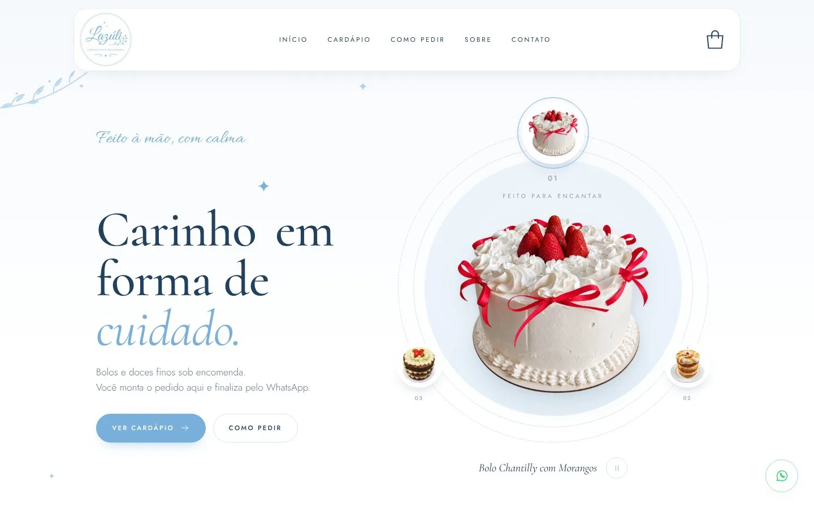
O Projeto
A Lazúli é uma confeitaria artesanal que trabalha sob encomenda: bolos de festa, tortas, docinhos e salgados feitos em pequenas fornadas. Até então, todo pedido nascia numa conversa de WhatsApp ou Instagram, o que significava responder sempre as mesmas perguntas (sabores, tamanhos, preço, entrega) antes de o pedido começar de verdade.
A cliente pediu um site que funcionasse como vitrine e balcão de pedidos ao mesmo tempo, com a cara delicada da marca e sem obrigar ninguém a criar conta ou pagar por uma plataforma de e-commerce. A solução foi deixar o cliente montar o pedido completo no site e mandar tudo pronto para o WhatsApp, o canal que a confeitaria já usa no dia a dia.
O problema
Pedidos chegavam soltos e incompletos pelo WhatsApp, com muita troca de mensagem até fechar sabor, tamanho, data e entrega.
O objetivo
Um cardápio claro e um fluxo de pedido curto que entregue à confeitaria uma mensagem completa, pronta para confirmar.
As restrições
Negócio pequeno: sem custo de plataforma, fácil de atualizar (preços e cardápio mudam) e fiel à identidade visual que a marca já tinha.
O Site no Ar
O site já está publicado e funcionando. Dá pra navegar aqui mesmo: troque entre a versão de computador e a de celular, abra um produto, escolha as opções e veja a sacola.
Projeto em construção: o conteúdo e algumas funções ainda estão sendo ajustados com a cliente.
Estratégia de UX
Comecei mapeando a jornada de quem encomenda um doce. A pessoa geralmente já sabe para quando precisa e mais ou menos o quê quer; o que ela não sabe são as opções, o preço e as regras da confeitaria. Então o site precisava responder isso cedo e transformar a escolha num pedido completo, sem atrito.
Descobrir
Banner com os bolos da casa e acesso direto ao cardápio.
Escolher
Cartões compactos, filtros por categoria e busca por sabor.
Personalizar
Ficha do produto com tamanho, massa e recheio.
Montar o pedido
Sacola lateral com data, entrega e pagamento.
Finalizar
Mensagem pronta no WhatsApp, Pix e acompanhamento.
A partir dessa jornada, estas foram as principais decisões de experiência:
Cardápio logo depois do banner
O cardápio sobe para a primeira dobra de rolagem. Seções institucionais ("Como pedir", "Sobre") ficam depois.
POR QUÊQuem chega ao site quer ver produto e preço. Menos rolagem até a decisão.
Cartão resumido + ficha do produto
O cartão mostra só nome, descrição curta e "a partir de". As opções aparecem numa ficha: modal no computador e bottom sheet no celular.
POR QUÊRevelação progressiva: a grade fica leve para comparar, e o detalhe aparece só quando há interesse.
Opções em chips, com contexto
Tamanho, massa e pagamento são escolhidos em chips. No tamanho, cada chip já diz quantas fatias rende (15 cm · 15 a 20 fatias).
POR QUÊToque fácil no celular, escolha visível de relance e menos dúvida do tipo "esse tamanho serve pra quantas pessoas?".
Sacola lateral, sem trocar de página
A sacola abre como gaveta por cima do site, com um contador animado no ícone a cada item adicionado.
POR QUÊO cliente não perde o lugar no cardápio e tem retorno imediato de que o item entrou.
Formulário curto e condicional
Endereço só aparece se for entrega; troco só se o pagamento for em dinheiro; o CEP preenche rua e bairro e a taxa do bairro aparece de forma discreta.
POR QUÊCada campo a menos reduz o abandono. A pessoa só vê o que se aplica ao pedido dela.
Regras da loja dentro do fluxo
Data e horário respeitam a antecedência mínima e o horário de funcionamento. Se a data não serve, o site já sugere a primeira disponível.
POR QUÊEvita o pedido "impossível" que só seria recusado depois, na conversa.
WhatsApp como checkout
Ao enviar, o pedido é registrado e uma mensagem completa (itens, opções, data, entrega, pagamento) é aberta no WhatsApp.
POR QUÊÉ onde a cliente e os clientes dela já conversam. Zero curva de aprendizado para os dois lados.
Pix e acompanhamento do pedido
Depois do envio aparece o QR Code do Pix com "copia e cola" e uma linha do tempo do pedido: recebido, confirmado, em preparo, pronto, saiu para entrega, entregue.
POR QUÊReduz a ansiedade pós-compra e as mensagens de "e aí, meu bolo já saiu?".
Acessibilidade e privacidade
Carrossel do banner com botão de pausar, foco visível, rótulos para leitores de tela, diálogos com aria-modal, avisos com aria-live, política de privacidade e consentimento opcional para promoções.
POR QUÊUm site de pequeno negócio também precisa funcionar para todo mundo e respeitar a LGPD.
Design System
O ponto de partida foi o logo da Lazúli: lettering manuscrito em azul claro sobre branco, com ornamentos em traço fino (ramos e brilhos de quatro pontas). Daí saiu o conceito visual do site, que resumi numa frase guia: muito branco, blocos de azul gelo e traço fino. Delicado como a marca, mas organizado o bastante para vender.
Abaixo, o design system renderizado com as cores, fontes e componentes reais do site.
Feito à mão, com calma
Carinho em forma de cuidado.
Sobretítulo manuscrito → título serifado → parágrafo leve. Esse trio se repete em todas as seções e dá ritmo à página.
#78B0DBBotões, detalhes e ornamentos#6AA5D3Botão ao passar o mouse#22405FTítulos e preços#667C91Parágrafos, cinza azulado#8EA0B1Legendas e rótulos#D5E5F2Bordas finas#EAF3FABlocos de cor e seleção#F6F9FCFundo de seções#FFFFFFFundo e cartões#25D366Só no botão flutuanteO texto nunca é preto: é um cinza azulado, e os títulos usam o azul profundo. Isso mantém o contraste de leitura e deixa a página inteira na mesma família de cor. O verde do WhatsApp é a única cor fora da paleta, reservada para o botão de contato, para ser reconhecido na hora.
Allura
Manuscrita, ecoa o lettering do logo. Usada só em frases curtas.
sobretítulosCormorant
Serifada elegante, com itálico expressivo para palavras de destaque.
títulos, nomes de produtoJost (300 / 400 / 500)
Geométrica e leve. Em caixa alta espaçada vira rótulo e botão.
texto, rótulos, botões, preços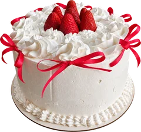
Bolo de festa
Escolha o tamanho, a massa e o recheio.
| Token | Valor | Uso | |
|---|---|---|---|
--r-sm | 12px | Campos e miniaturas | |
--r-md | 18px | Cartões de produto | |
--r-lg | 24px | Menu flutuante, fichas, modais | |
999px | pílula | Botões, chips, quantidade | |
--sombra | 0 18px 50px -24px rgba(34,64,95,.22) | Elementos em destaque | |
--sombra-leve | 0 10px 30px -18px rgba(34,64,95,.18) | Menu e cartões | |
--wrap | 1180px | Largura máxima do conteúdo | |
.sec | clamp(70px, 10vw, 130px) | Respiro vertical entre seções, fluido |
As sombras são sempre tingidas de azul profundo (nunca preto) e bem difusas, para os elementos "flutuarem" sem pesar no branco.
Ornamentos · traço fino, animação lentaOs mesmos desenhos do logo foram redesenhados em SVG e espalhados pelas seções com opacidade baixa e uma flutuação de 9 a 13 segundos. Quem prefere menos movimento no sistema não vê a animação.
No Figma, o design system está organizado em três quadros: Fundamentos (cores e escala tipográfica), Componentes (botões e seus estados de hover, chips, cartão de produto e o carrossel orbital do banner) e Imagens do site.
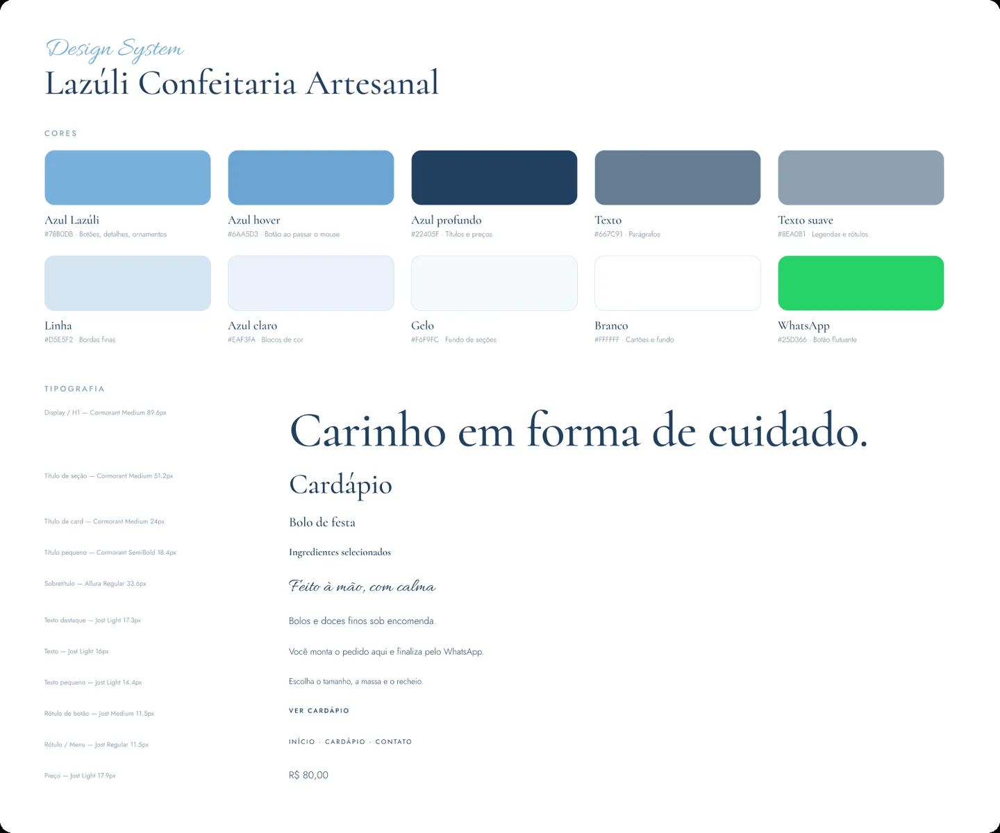
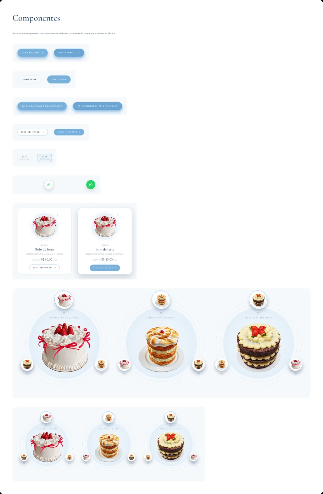
Interface
O destaque da home é o carrossel orbital: três bolos da casa giram ao redor de um disco azul gelo, trocando sozinhos a cada 2,6 segundos, com o nome do bolo em itálico logo abaixo e um botão para pausar. Ele substitui o banner de foto comum e já apresenta o produto como protagonista, com o mesmo círculo que se repete nas fotos do cardápio.
O menu é uma barra flutuante arredondada que ganha fundo ao rolar. As seções alternam fundo branco e gelo para separar os assuntos sem precisar de linhas, e cada uma abre com o trio sobretítulo, título e parágrafo.
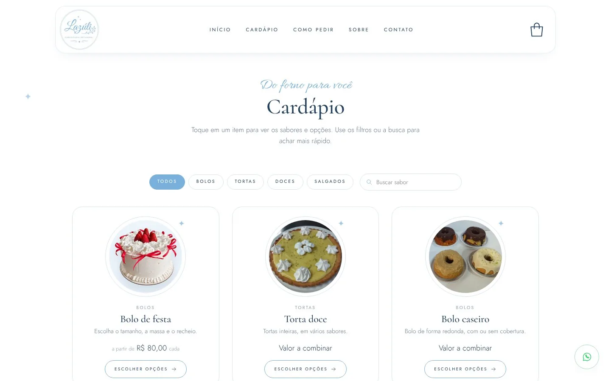
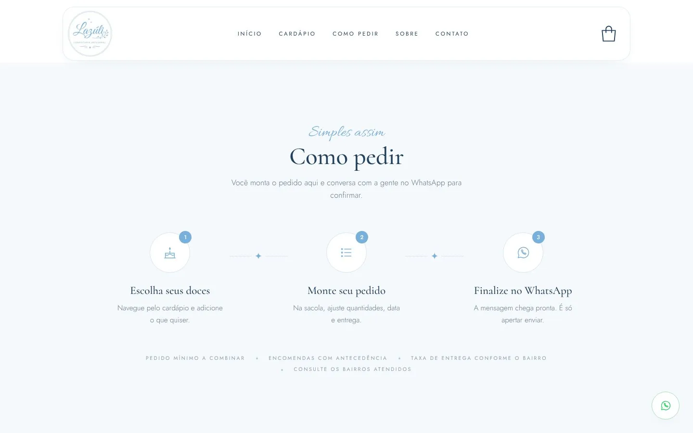
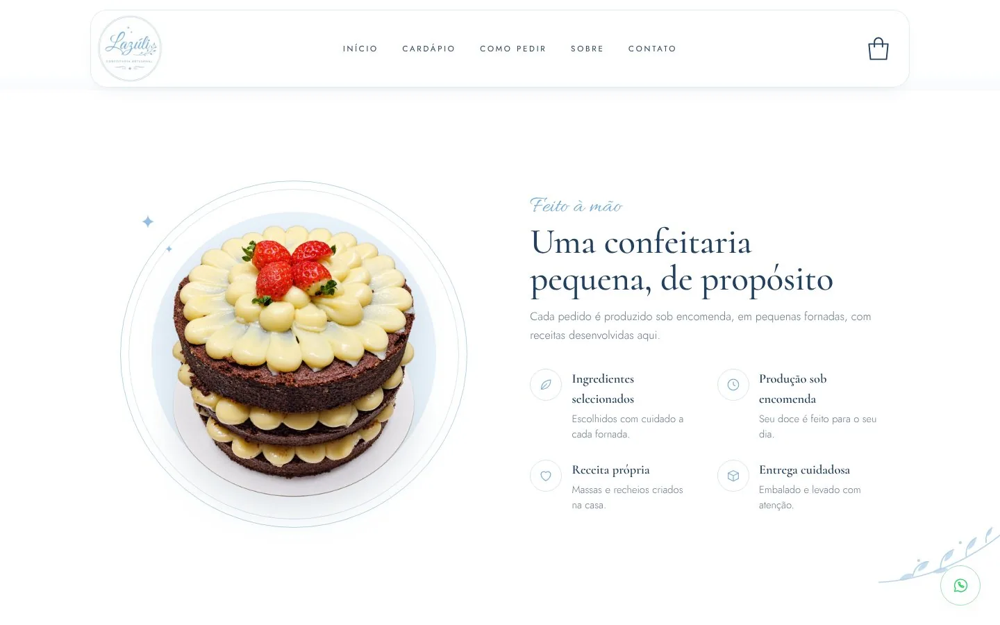
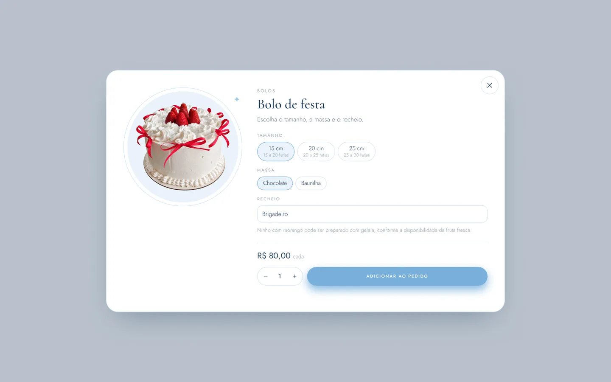
O fluxo de pedido, do carrinho ao acompanhamento:
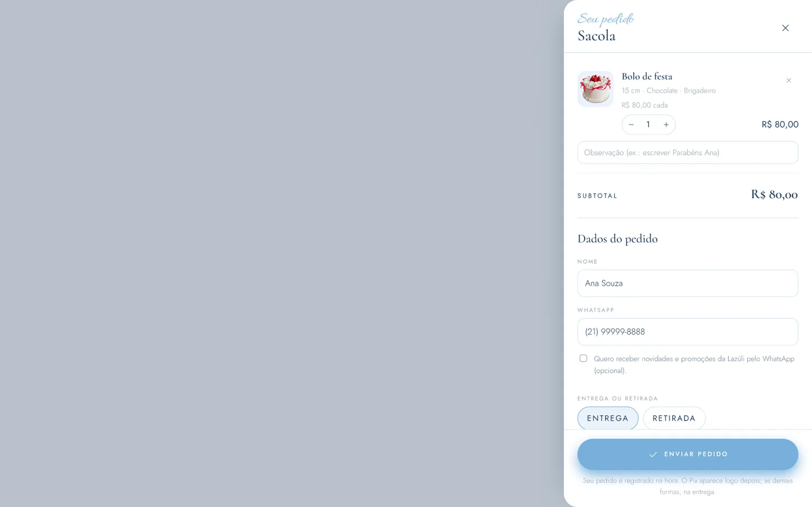
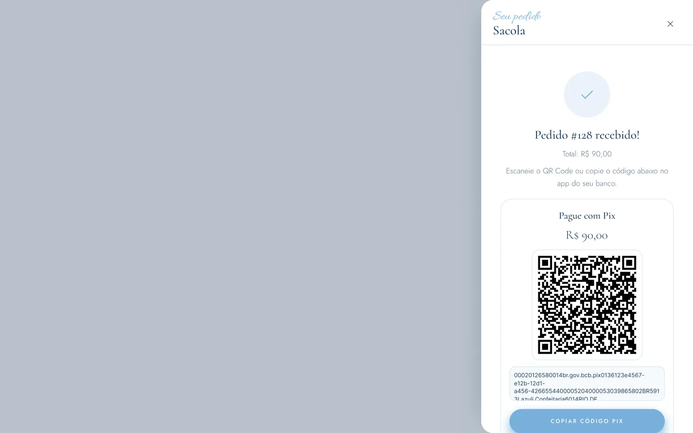
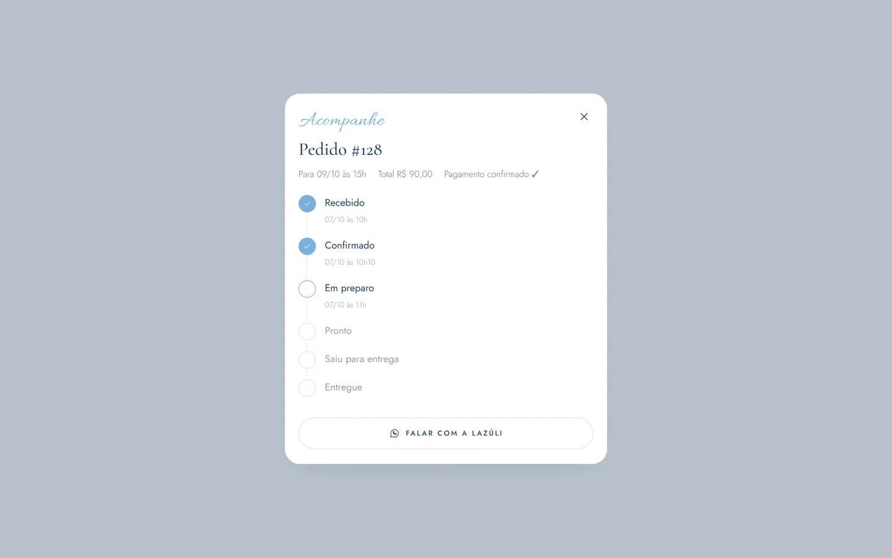
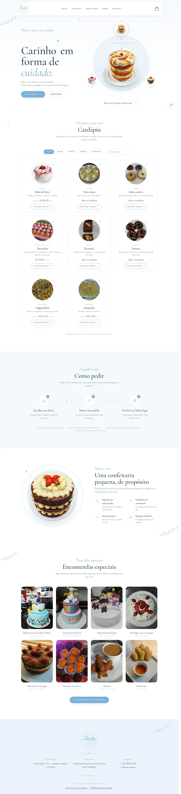
No celular, a ficha do produto vira um bottom sheet (sobe da parte de baixo, perto do polegar), o menu vira um botão de três linhas e o título do banner centraliza:
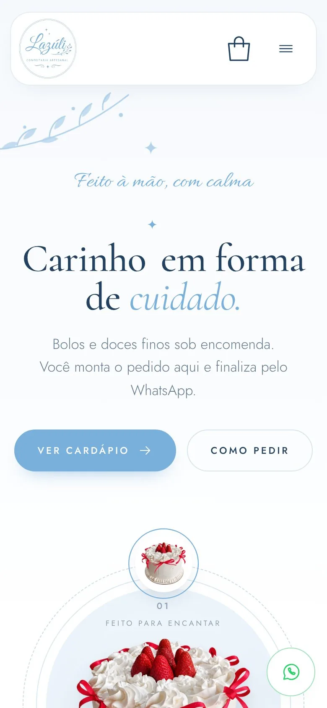
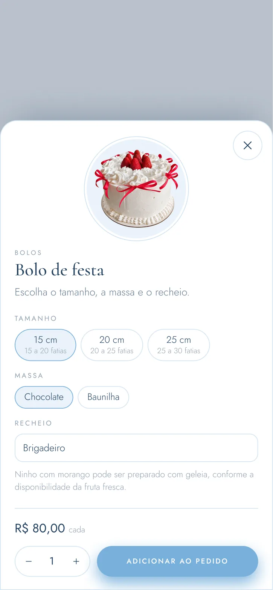
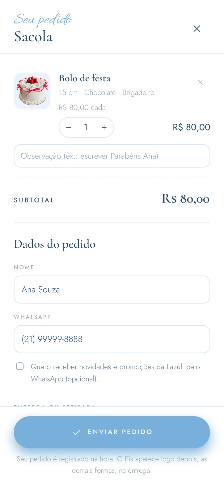
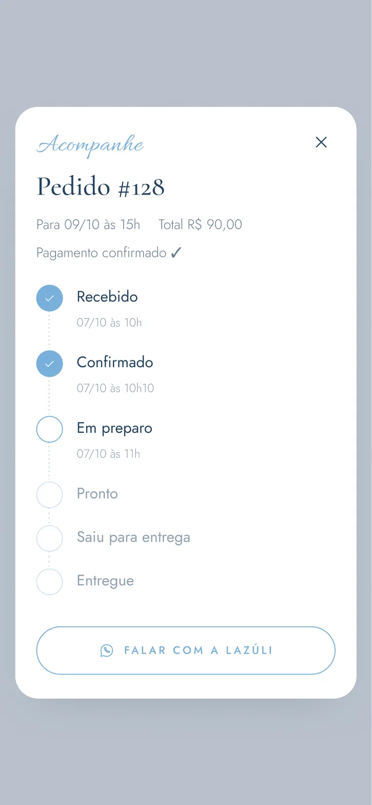
Projeto e Protótipo no Figma
O arquivo do Figma tem as versões de computador e de celular completas, com protótipo navegável: dá pra abrir os produtos, adicionar à sacola, ver o pedido recebido e o acompanhamento. Os botões têm estados de hover e o carrossel do banner anima sozinho.
Desktop
12 frames em 1440px
- Home completa
- 8 fichas de produto
- Sacola, pedido recebido, acompanhar
Mobile
13 frames em 390px
- Home e menu aberto
- 8 fichas em bottom sheet
- Sacola, pedido recebido, acompanhar
Design System
3 quadros de referência
- Fundamentos (cores e tipografia)
- Componentes e estados
- Imagens do site
O protótipo do Figma é carregado aqui. Ele é pesado, então só abre quando você pedir.
Do Figma ao Site no Ar
Uma parte importante do projeto foi garantir que o site publicado fosse fiel ao Figma. Para isso, os nomes do design system viraram, literalmente, as variáveis do código: o mesmo "Azul profundo" do Figma é o --profundo do CSS. Quando uma cor muda, muda em um lugar só.
/* Layout: muito branco, blocos de azul gelo, traço fino. */ :root { --azul: #78b0db; /* botões, detalhes, ornamentos */ --azul-claro: #eaf3fa; /* blocos de cor */ --gelo: #f6f9fc; /* fundo de seções */ --profundo: #22405f; /* títulos e preços */ --texto: #667c91; /* parágrafos */ --f-script: "Allura"; --f-serif: "Cormorant"; --f-sans: "Jost"; }
Fácil de atualizar
Cardápio, preços, horários, bairros e WhatsApp ficam num bloco de configuração no topo do código, em português. Trocar um preço é editar uma linha.
Leve
Sem framework: um HTML com CSS e JavaScript próprios, imagens em WebP com miniaturas e carregamento sob demanda.
Publicação gratuita
Hospedado no GitHub Pages: sem mensalidade de plataforma, com histórico de cada alteração.
Conectado à gestão
O site está sendo ligado a um painel de pedidos da confeitaria, para os pedidos e o status de acompanhamento saírem do mesmo lugar.
Status e Próximos Passos
O projeto está no ar e evoluindo junto com a cliente. Este case vai ser atualizado conforme as próximas fases forem concluídas.
- Design system e telas no Figma · desktop, mobile e protótipo navegável
- Site publicado · cardápio, ficha do produto, sacola e finalização pelo WhatsApp
- Pix, cupons e acompanhamento · integração com o painel de pedidos da confeitaria
- Depoimentos reais · a seção já está desenhada e entra quando houver avaliações de clientes
- Teste de usabilidade · observar clientes reais fazendo um pedido do início ao fim e ajustar o fluxo